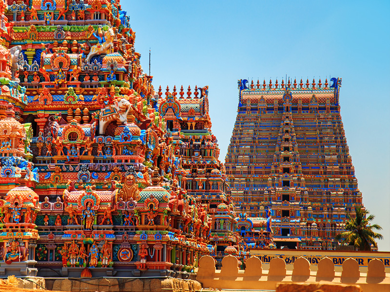

The month of June welcomes summers with a bright sunshine over the north of india which proves it to be the best time to visit north india and the mountains in the east . it also welcomes a large number of local festivals which are of great interest to the tourists. Tourists may also experience different weather climates of india in different parts of the country.
20' June -- Jagannath Rath Yatra
The Ratha Yatra of Puri, also rendered as the Ratha Jatra (Odia: ରଥଯାତ୍ରା, lit. 'chariot festival') is a Hindu festival associated with the deity Jagannath held at Shri Kshetra Puri Dham in the state of Odisha, India. It is the oldest Ratha Yatra, whose descriptions can be found in Brahma Purana, Padma Purana, the Skanda Purana, and the Kapila Samhita.This Ratha Yatra is the celebration of the occasion of the deity Jagannath, a form of the Hindu deity Vishnu or Krishna, journeying towards his aunt's house. Adherents mark this occasion as Jagannath's annual visit to the Gundicha Temple via Mausi Maa Temple (maternal aunt's home) near Saradha Bali, Puri.
Mainly, it is celebrated in the various parts of Odisha. Many local artists spend days decorating these chariots of three Hindu deities. On the day of Rathayatra, hundreds of devotees together step up to pull these chariots.
Jagannath Puri Temple
The Jagannath Temple is an important Hindu temple dedicated to Jagannath, a form of Vishnu – one of the trinity of supreme divinity in Hinduism. Puri is in the state of Odisha, on the eastern coast of India. The present temple was rebuilt from the tenth century onwards, on the site of pre-existing temples in the compound but not the main Jagannatha temple, and begun by Anantavarman Chodaganga, the first king of the Eastern Ganga dynasty.
The Puri temple is famous for its annual Ratha Yatra, or chariot festival, in which the three principal deities are pulled on huge and elaborately decorated temple cars. It is one of the Char Dham pilgrimage sites.
23' June -- Ambubachi Mela
>"Ambubachi" means spoken with water and it also implies that the rains expected during this month make the earth fertile and ready for procreation. Daily worship is suspended during this period. All agricultural work like digging, ploughing, sowing, and transplanting of crops are forbidden.
The Ambubachi Mela is an annual Hindu mela (gathering) held at Kamakhya Temple in Guwahati, Assam. This yearly mela is celebrated during the monsoon season that happens to fall during the Assamese month Ahaar, around the middle of June when sun transit to the zodiac of Mithuna, when the Brahmaputra river is in spate. During this time Brahmaputra River near the temple turns Red for three days.
Kamakhya Temple
The Kamakhya Temple at Nilachal hills in Guwahati, Assam is one of the oldest and most revered centres of Tantric practices, dedicated to the goddess Kamakhya. The temple is the center of the Kulachara Tantra Marga and the site of the Ambubachi Mela, an annual festival that celebrates the menstruation of the goddess. Structurally, the temple is dated to the 8th-9th century with many subsequent rebuildings and the final hybrid architecture defines a local style called Nilachal. It is also one of the oldest of the 51 pithas in the Shakta tradition. An obscure place of worship for much of history it became an important pilgrimage destination, especially for those from Bengal, in the 19th century during colonial rule.
Originally an autochthonous place of worship of a local goddess where the primary worship of the aniconic yoni set in natural stone continues till today, the Kamakya Temple became identified with the state power when the Mleccha dynasty of Kamarupa patronised it first, followed by the Palas, the Koch, and the Ahoms.
3' June -- Vat Savitri
Vat Savitri Purnima Vrat is the festival, which is celebrated to honour mother Savitri. According to the Hindu Scriptures, it is believed that savitri married to satyavaan who had a short life.
Vat Purnima in English means a full moon related to the banyan tree. It is a Hindu festival celebrated strictly in the Northern and Western Indian states Maharashtra, Goa, and Gujarat.The period of the festival is observed over three days, usually the 13th, 14th and 15th days in the month of Jestha (May–June).Women observe a fast and tie threads around a banyan tree and pray for the well-being of their husbands
The Savitri Temple
The Savitri temple in Pushkar is located on the Ratnagiri hill which is a popular pilgrimage site for the Hindus. The temple is dedicated to Goddess Savitri. It is a very strenuous work to climb on the hilltop but it is believed that the harder you work the more ‘Tapas’ are gained. In this temple you will find the idols of both the wives of Lord Brahma named Savitri and Gayatri. But as per tradition Goddess Savitri is always worshipped first and then prayers to Goddess Gayatri are offered. The visitors can either trek to the temple gates or take a ride in the cable cars which take passengers to the temple. The ropeway ride is really full of fun from where you can have an awesome view of the Pushkar city. However, many devotees prefer to climb 200 stairs leading to the shrine which they consider an important part of their pilgrimage to the place.
2' June -- Vaikasi Visakam
Vaikasi Visakam is a very special day for the people of Tamilnadu. This day is dedicated to Lord Muruga or Lord Murugan as we celebrate his birth anniversary on this auspicious day. Sometimes, this festival is also known as Vaigasi Visagam. People celebrate this festival on Vaisakhi month of the Hindu Calendar. Usually, this day arrives between the month of May or June. Lord Murugan was born on a full moon or Purnima coincided in the Vishakha Nakshatra. According to Myths, Lord Muruga took birth from Lord Shiva’s third eye, and as a result, he holds the destructive powers. He is the second child of Lord Shiva, who is also known as Lord Kartikeya in other regions of India. Lord Muruga is a God of strength, prosperity and knowledge. On Vaikasi Visakam, we offer special puja to appease Lord Murugan. Devotees visit nearby Murugan Temples to seek his divine blessing on this day.

Sri Ranganathaswamy Temple
Sri Ranganathaswamy Temple is a Hindu temple dedicated to Ranganatha (a form of Vishnu), located in Srirangam, Tiruchirapalli, Tamil Nadu, India.[4] Constructed in the Dravidian architectural style, the temple is glorified by Alvars in their Naalayira Divya Prabhandam[5] and has the unique distinction of being the foremost among the 108 Divya Desams dedicated to the god Vishnu.It is the most illustrious Vaishnava temples in South India rich in legend and history. The temple has played an important role in Vaishnavism history starting with the 11th-century career of Ramanuja and his predecessors Nathamuni and Yamunacharya in Srirangam.